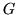
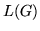
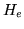
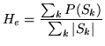

This program will read in a word network definition in standard HTK lattice format representing a Regular Grammar  and randomly generate sentences from the language  of . The sentences are written to standard output, one per line and an option is provided to number them if required.
The empirical entropy  can also be calculated using the formula
|  | (17.6) |
| (17.7) |